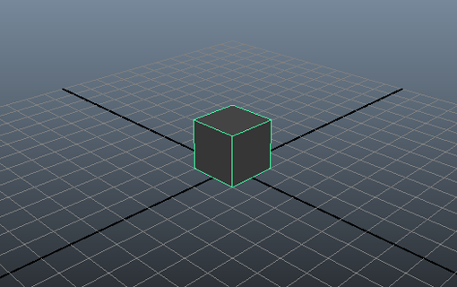
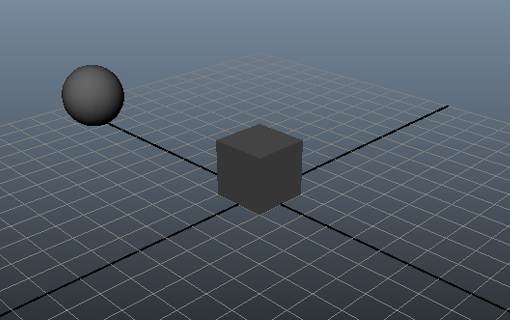
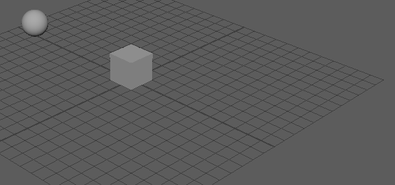

此工作流说明了三个对象中任意两个之间的刚体模拟和碰撞检测。
- 在新的 Maya 场景中，将 Maya 时间滑块的持续时间设置为 100 帧，并确保已将其设置为在第 1 帧播放。
- 创建多边形立方体，方法为选择“创建 > 多边形基本体 > 立方体”(Create > Polygon Primitives > Cube) >
 。
。
- 将“宽度”(Width)、“高度”(Height)和“深度”(Depth)设置为 2，然后单击“创建”(Create)。
- 放置立方体，方法为将其“平移”(Translate)值设置为以下值:
- X: 0
- Y: 1
- Z: 0
 - 创建多边形球体，方法为选择“创建 > 多边形基本体 > 球体”(Creat > Polygon Primitives > Sphere)。将“半径”(Radius)设置为 1，然后单击“创建”(Create)。
- 放置球体，方法为将其“平移”(Translate)值设置为:
- X: -10
- Y: 1
- Z: 0
 - 将立方体和球体转化为刚体，方法是按
 键并选择它们，然后选择“Bullet > 创建主动刚体”(Bullet > Create Active Rigid Body)。
键并选择它们，然后选择“Bullet > 创建主动刚体”(Bullet > Create Active Rigid Body)。
- 在“大纲视图”(Outliner)中，选择“bulletSolver”。
- 在“属性编辑器”(Attribute Editor)中，启用“解算器特性”(Solver Properties)部分的“地平面”(Ground Plane)。
- 在“属性编辑器”(Attribute Editor)中，选择立方体并选择其 bulletRigidBodyShape 节点选项卡。
- 在“刚体特性”(Rigid Body Properties)部分中，将“摩擦力”(Friction)设置为 0.1，这会减小由于目前作用在该对象上的摩擦所产生的力。
- 将“恢复”(Restitution)设置为 0.0，使该立方体在球体碰撞时不反弹。
注： 尝试使用“恢复”(Restitution)设置以创建球体推动立方体时的立方体反应，
- 在“属性编辑器”(Attribute Editor)中，选择球体并选择 bulletRigidBodyShape 节点选项卡。
- 在“刚体特性”(Rigid Body Properties)部分中，将“摩擦力”(Friction)设置为 0.1，并在“力/冲量”(Forces/Impulses)部分中，将沿 X 轴的“冲量”(Impulse)设置为 0.8。
- 在“碰撞对象特性”(Collider Properties)部分中，将“碰撞对象形状类型”(Collider Shape Type)设置为球体。一种好方法是将碰撞对象形状类型尽可能匹配为正在使用的形状。播放模拟。
“冲量”(Impulse)属性沿 X 轴应用力，从而导致刚体球体沿平面滚动并与立方体碰撞，使其前行。